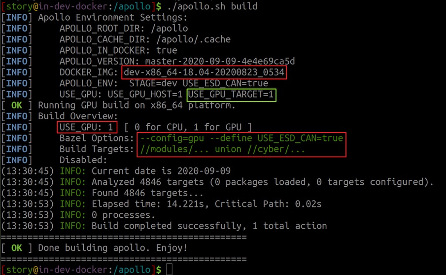

Apollo Build and Test Explained¶
This document focuses on how to build and test Apollo in different ways.
Pre-requisites¶
You are supposed to have followed Apollo Software Installation Guide. Make sure you are in Apollo development Docker container before you proceed.
Overview¶
Apollo uses Bazel as its underlying build system. Bazel is an open-source build and test tool with a human-readable, high-level build language suitable for medium and large projects. Basically, the better you know about Bazel, the better you know about Apollo Build.
Building Apollo¶
Subcommands in apollo.sh¶
Let’s first take a look at the usage of apollo.sh.

From this message, we can see subcommands that starts with “build_”, like
build_dbg, build_cpu, and build_opt_gpu, etc. As you may figure out, they
are all variants for their basic form: apollo.sh build.
Building Apollo using apollo.sh build¶
You can use ./apollo.sh build to build individual modules, or the whole Apollo
project.
Type the following command to build, say, Cyber RT:
bash apollo.sh build cyber
To build the whole Planning module (all
targets
under the modules/planning directory):
bash apollo.sh build planning
To build everything,
bash apollo.sh build
 For simplicty, Apollo 6.0 introduces the notion
of
For simplicty, Apollo 6.0 introduces the notion
of bash apollo.sh build [module] to replace the notion of build_cyber,
build_planning, etc in previous Apollo releases.
Variants of apollo.sh build¶
There are mainly four variants of apollo.sh build, namely, build_dbg,
build_opt, build_cpu and build_gpu.
You may ask, what’s the differences among them?
Good question. Let me try to make this clear.
Debug v.s. Optimized Build: build_dbg/build_opt¶
By default, Apollo uses the
fastbuild compilation mode
. So when you type bash apollo.sh build planning, you are indicating Bazel to
run:
bazel build [other options] -c fastbuild //modules/planning/...
for you.
When you type bash apollo.sh build_dbg planning, you are running
bazel build [other options] --config=dbg //modules/planning/...
Please note that --config=dbg implies -c dbg, as can be seen from the
following section from tools/bazelrc:
build:dbg -c dbg
build:opt -c opt
Now you can understand the build_opt variant. Basically,
bash apollo.sh build_opt cyber
means
bazel build [other options] -c opt //cyber/...
CPU v.s. GPU Build: build_cpu/build_gpu¶
By now, you can easily figure out that build_cpu and build_gpu are just
another form of running
bazel build --config=cpu
and
bazel build --config=gpu
respectively under the hood.
However, things are a bit complicated compared to the build_dbg/build_gpu
case.
Here is a snapshot showing the log messages on my screen when running
apollo.sh build:

There are three USE_GPU: USE_GPU_HOST, USE_GPU_TARGET and USE_GPU.
USE_GPU_HOSTis an environment variable determined bydocker/scripts/dev_start.shto pass to Apollo Docker container, which indicates whether the host machine (where Docker is running) is GPU capable.USE_GPU_TARGETis an environment variable determined byscripts/apollo.bashrcinside Docker container to indicate whether the container is GPU capable.USE_GPUis a variable indicating whether to perform CPU build or GPU build.
When you type bash apollo.sh build --config=cpu or
apollo.sh build --config=gpu, the
build script
will check the GPU capability of the Docker container and determines whether the
build you specified can succeed.
If you didn’t specify whether to perform CPU or
GPU build, the build script will determine it automatically according to GPU
capability of your Docker environment.
It’s OK to run CPU build in a GPU capable
Apollo container, whereas running GPU build in a CPU-only container will fail.
By design, --config=cpu and --config=gpu
are mutually exclusive. You should specify at most one of them when running
apollo.sh build.
Optimized GPU Build with build_opt_gpu¶
build_opt_gpu is just the combination of build_opt and build_gpu.
bash apollo.sh build_opt_gpu
is equivalent to
bazel build --config=opt --config=gpu //...
Running Unit Tests: apollo.sh test¶
Since bazel test inherits all options from bazel build (Ref:
Bazel Docs:Test Options),
the discussions above are applicable to apollo.sh test.
# Each of the following pairs are basically equivalent:
# Run unit tests under the `cyber` directory
bash apollo.sh test cyber
bazel test [--config=cpu|--config=gpu] //cyber/...
# Run unit tests for all in CPU mode
bash apollo.sh test --config=cpu
bazel test --config=cpu //...
# Run unit tests for the Planning module in GPU mode
bash apollo.sh test --config=gpu planning
bazel test --config=gpu //modules/planning/...
Actually, apollo.sh test is equivalent to
bazel test --config=unit_test
All the cpplint targets was excluded, since there is an independent
apollo.sh lint command.
Running Code Coverage using apollo.sh coverage¶
Since bazel coverage inherits all options from bazel test(See
Bazel Docs: Coverage Options),
all the discussions about apollo.sh test applies to apollo.sh coverage.
Build/Test/Coverage: An Insider’s View¶
Under the hood, apollo.sh build/test/coverage makes use of
scripts/apollo_build.sh,
scripts/apollo_test.sh,
and
scripts/apollo_coverage.sh
respectively.
If you are familiar with Bazel, you can build/test any fine-grained target(s). For example,
bazel test -c dbg //cyber/common:file_test
bazel build --config=opt //modules/dreamview/backend
bazel test --config=gpu //modules/localization/...